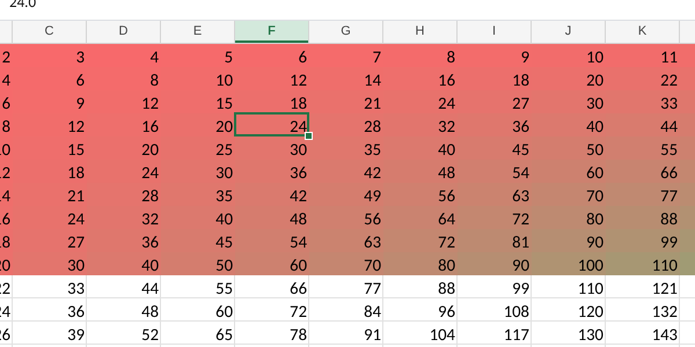
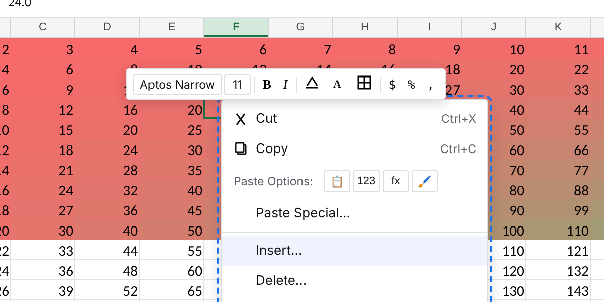
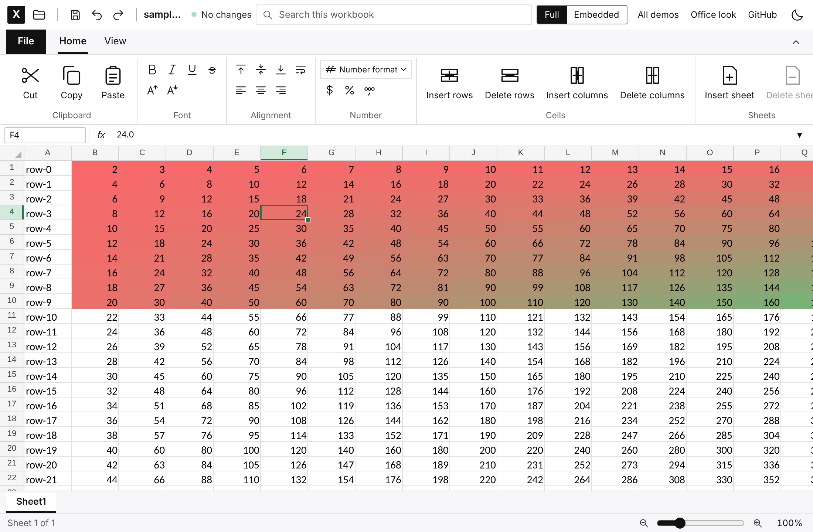
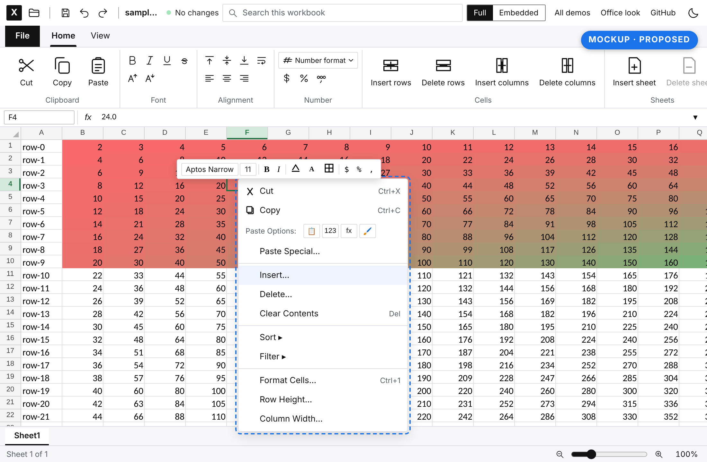

Right-click menus with the everyday commands, like Office
Approve: tap 👍 on the issue · Decline: tap 👎
Close-up of the change




Full screen


Today: right-clicking cell F4 does nothing; no menu appears, so Insert, Delete, Clear and Format are only on the ribbon.


Mockup: Excel-style right-click menu (Cut, Copy, Paste Options, Insert…, Delete…, Clear Contents, Sort, Filter, Format Cells…) with the mini toolbar above it.
Tap an image to open it full size.
Why
Right-click is how most people reach Cut, Copy, Paste, Insert row and Format Cells in Word, Excel and PowerPoint, and Google Docs, OnlyOffice and Collabora all copy it. In Nitro a right-click does nothing, so users who don't know the ribbon layout get stuck. The editor already has a context-menu framework and a Shift+F10 shortcut entry; they just aren't wired to right-click or filled with per-app commands.
Definition of done
- Right-click (and Shift+F10 / the Menu key) opens an Office-style menu at the pointer in all three apps; Esc, click-away and arrow keys work, and it is screen-reader accessible (role=menu).
- Excel: Cut, Copy, Paste Options, Insert…, Delete…, Clear Contents, Sort, Filter, Format Cells…, Row Height…, Column Width…; on row/column headers: Insert, Delete, Hide, Unhide.
- Word: Cut, Copy, Paste Options, Font…, Paragraph…, Link…, bullets and numbering; PowerPoint: Cut, Copy, Paste, Duplicate, Delete, Bring to Front / Send to Back on shapes, and New Slide / Duplicate / Delete on the thumbnail rail.
- Right-click moves the selection to the target first; disabled items are greyed out; a contextmenu="browser" attribute (and React prop) keeps the browser's own menu for hosts that want it.
- Playwright tests cover one item per app plus keyboard open; bundle-budget and all required checks green.
Approve: tap 👍 on the issue · Decline: tap 👎